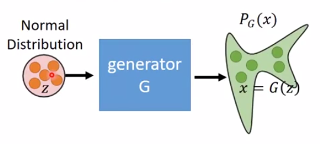
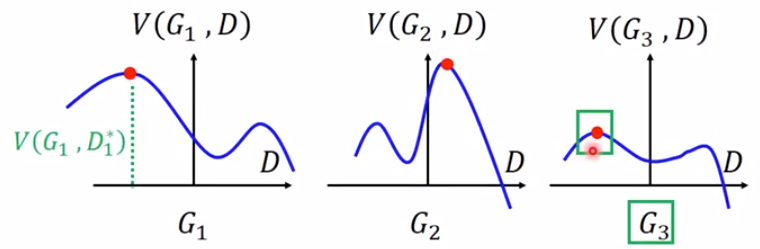
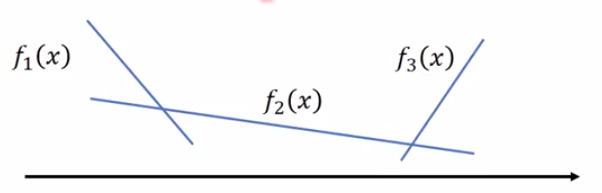
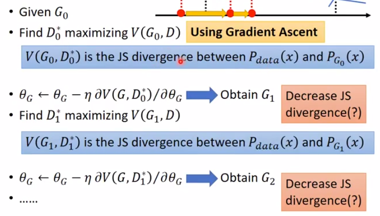

假设要生成的x是高维空间中的一个点
在高维的Image Space中，只有一小部分点example出来是合理的。
即：要产生的x符合一个固定的distribution。目标是找出这个distribution。
定义目标distribution为Pdata(x)
1. 在GAN之前，使用最大似然估计来找Pdata(x)P_{\text{data}}(x)Pdata(x)

- 定义一个distribution PG(X;θ)
- 调整θ，使PG与Pdata(x)越接近越好。
- 2.1 从Pdata(x)中sample出m个点xi
- 2.2 计算PG(xi;θ)
- 2.3 定义最大似然估计公式L=∏i=1mPG(xi;θ)
- 2.4 找出最大化L的参数θ∗
2. 最大似然估计 = 最小KL散度
θ∗==argθmini=1∏mPG(xi;θ)argθminKL(Pdata∣∣PG)
3. 后面的我也不知道在讲什么，只是把讲的内容记下来
G∗=argGminDiv(PG,Pdata)
公式中的PG未知，所以无法直接比较这两个分布的KL散度
从PG和Pdata各sample出一些data
V(G,D)=EX∼Pdata[logD(x)]+EX∼PG[log(1−D(x))]
在计算公式过程中：
D(x)可以是任意function，通常是由NN训练得到。
分布PG是固定不变的。
解以上公式得：
D∗===argDmaxV(D,G)argDmaxPdata(x)logD(x)+PG(x)log(1−D(x))argDmaxalogD+blog(1−D)
说明：上面公式中，为了简化计算，人为定义出：
abDf(D)====Pdata(x)PG(x)D(x)alogD+blog(1−D)
直接寻找f(D)偏导为0的点：
令dDdf(D)=0，得：D∗=a+ba
把D∗代入V(G,D)得：
V(G,D∗)==−2log2−2log2++KL(Pdata∣∣2Pdata+PG)+KL(PG∣∣2Pdata+PG)2JSD(Pdata∣∣PG)
公式中，JSD代表Jesen-Shannon Divergence
上面提到公式G*的计算：
G∗=argGminDiv(PG,Pdata)
G*无法直接计算，根据上面的推导得到：
G∗=argGminDmaxV(G,D)D∗=argDmaxV(G,D)
怎么理解上面这两个公式：

图中红点代表能使V(D, G)最大的D∗
G3是这三个中最优的G*。
训练步骤：
- 初始化G和D
- 迭代
- 2.1 固定住G，更新D
- 2.2 固定住D，更新G
由于计算G∗=argminGmaxDV(G,D)这一步要求固定住D，因此定义loss function为：
L(G)=Dmax(V,G)
问：带max的分段函数怎么求导？
答：以下图为例：

dxdf(x)=dxdfi(x)
if fi(x) is the max one。
求G*的迭代过程没看懂，直接上图：

后面就放弃了